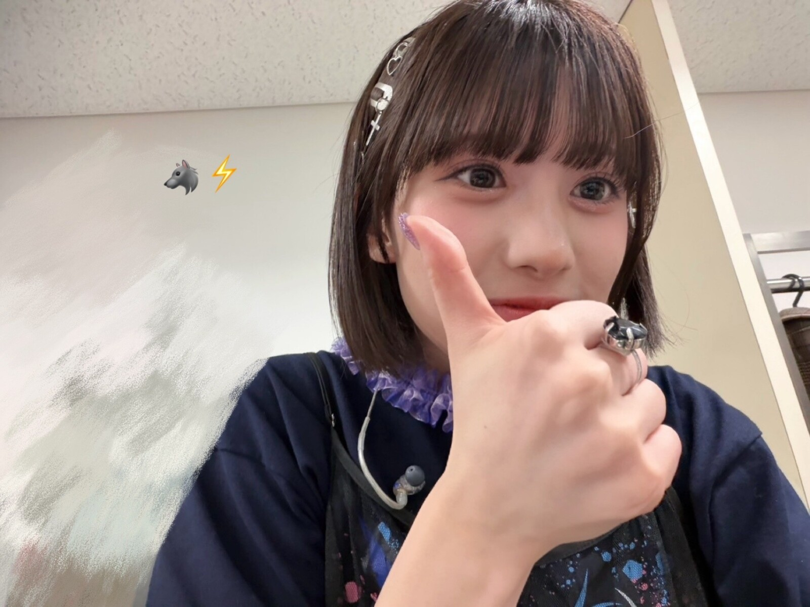

橘杏咲の立ち話もなんですから！ 第21回橘杏咲的“站着聊可说不完！” 第21回
皆さんこんにちは🌸
大家好🌸
気づけばすっかり春ですね。
不知不觉间，已经彻底入春了呢。
ついこの前まで春が来る気配がするけれど、気配を感じ取ってしまうと恥ずかしくて逃げるの何！？と怒っていたのですが、もう完全に来ました。暖かい！でも相も変わらず花粉も元気いっぱい！困ります。
直到前不久我还在生气地吐槽“明明隐约有春天要来的气息，怎么一被人察觉就害羞逃跑了啊，搞什么嘛!?”，如今春天总算完完全全降临啦。真暖和！不过花粉也一如既往地精力充沛！太伤脑筋了。
でもその分、外に出る理由が増える季節でもあって。気温も空気もちょうどよくて、街中にピンク色が増えて…ちょっと歩くだけで気分が上がるあの感じ。やっぱり春はいいなぁとなります。
但相对的，这也是个让人多出好多出门理由的季节。气温和空气都恰到好处，街头巷尾的粉色也渐渐多了起来……光是随便走走心情就会跟着飞扬起来的那种感觉，还是会让人忍不住感叹“春天真好呀”。
私ピンク好きなんですよ、可愛いので。可愛いもの好き代表としてはピンクや水色白など、可愛い色といえばの上位にランクイン確実、みたいな色は当たり前に大好きです。
我其实很喜欢粉色哦，因为很可爱嘛。作为可爱事物爱好者代表，像粉色、浅蓝色、白色这种在“公认可爱颜色”榜单上稳居前列的色系，我理所当然全都很喜欢。
でも好きな色なに？の答えにピンクと答えるのはなんだか恥ずかしいです。昔は可愛いという概念があまり好きではなかった小童だったので、私がピンク好きとかありえないと思っていました。
不过被问到“你喜欢什么颜色？”时，直接回答“粉色”总觉得有点不好意思。因为以前我还是个不太喜欢“可爱”这个概念的小屁孩，一直觉得“我怎么可能喜欢粉色啊，绝不可能”。
でも、昔からピンク好き可愛いもの好きの片鱗はうすら見えていて。たまごっちに妹とハマっていた時、私は大人ぶって紫を購入したんですけど妹のピンクが可愛く見えてきたのか、その後に買ったたまごっち関連のおもちゃを全部ピンク色にしていたのを覚えています。
不过其实从小时候起，我喜欢粉色、喜欢可爱东西的端倪就若隐若现了。记得以前和妹妹一起沉迷《拓麻歌子》的时候，我故意装大人选了紫色的，可大概是越看妹妹那台粉色的越觉得可爱，后来买的拓麻歌子周边玩具竟然全挑了粉色的。
小学校低学年くらいの時にたまごっちのアニメを見ていて、私はラブリっちやゆめみっちが好きでした。ピンクじゃん！！！全然ピンク好きじゃん！！！姉妹セットで親戚などからプレゼントをいただく時にそれぞれリボンで色分けをしてくれていることが多くて、その色が私が水色で妹がピンクだったんです。その時ピンクが羨ましくて、反動からピンク好きになったんだろうなと思ってます。
小学低年级那会儿看《拓麻歌子》动画时，我喜欢的也是甜心吉和小寻梦。这不就是粉色嘛!!! 根本超喜欢粉色的嘛!!! 以前亲戚送我们姐妹俩成套礼物时，经常会用不同颜色的丝带做区分，给我的总是浅蓝色，给妹妹的是粉色。我猜大概是那时候特别羡慕粉色，出于反作用心理才变得这么喜欢粉色吧。
時系列で考えていたら色々思い出してきたのですが、小学校低学年の時はまだ素直に可愛いもの好きで、中学年くらいになってから逆張りの意が芽生えてしまい、黒や青、なぜかオレンジが好きだと言い張る「可愛い」過激派になってしまっていました。今は勿論嬉しいのですが、可愛いと言われることすらとってもいやで、可愛いとか女の子っぽいとか言われるたびにキレていたような気がします。変な子。
顺着时间线一梳理，各种往事都涌上心头了——小学低年级时我还老老实实喜欢着可爱的东西，到了中年级左右突然冒出了唱反调的心思，硬说自己喜欢黑色、蓝色，不知为何还加上橙色，成了排斥“可爱”的激进派。现在被人夸当然会很开心，可那时候我连被说“可爱”都极度抗拒，印象里每次听见别人说我可爱或像女孩子就要发火。真是个怪小孩。
きっとクラスで人気だったショートカットのボーイッシュな子に憧れてたんだと思います。普段私服どんなの着てるの？という話題の時にその子がスカート履いたことないと言っていて、それに「かっくいぃ〜！！」となってから私服のときにかっこいいのを選ぶようになっていた気がします。
我当时肯定是在憧憬班里很受欢迎的一位短发假小子风女生吧。大家聊起“平时便服都穿什么呀？”这个话题时，她说自己从来没穿过裙子，我听完瞬间觉得“帅呆啦〜!!”，感觉从那以后我挑便服就专往帅气的方向选了。
なんだか、小学校が制服だったのでみんなの私服をみる機会はあまり無かったからこそ生まれる会話だったんだろうなと今思いました。
现在想想，大概正是因为我们小学穿校服、平时没什么机会看到大家的便服，才会冒出那样的话题呢。
まぁ、中学生になってから今まではもうずっと可愛い大好きちゃんです。
嘛，不过从上初中一直到现在，我就彻底成了超爱可爱事物的忠实粉丝啦。
今は着る服こそ黒が多かったりカジュアルなものが多かったりですが、小物は可愛い色ランキング上位確実色に染まっています。やっぱり普段自分にしかわからないものがきゅるきゅるに可愛いのが好きなんです。
虽然现在穿的衣服还是黑色或休闲款居多，但随身小物全都被“稳居可爱色系榜首”的颜色攻占了。果然我还是喜欢那些平时只有自己看得见的小物件闪亮亮、萌萌的可爱模样呀。
以前コラムでもお話ししたのですが、自分が可愛いお洋服を着るのはまた違って。可愛いものをひっそり愛でたい、みたいなそんな感じなんでしょうきっと。
以前的专栏里也聊过，自己穿可爱风的衣服又是另一码事了。我大概就是那种想把可爱的东西藏在身边、悄悄细细品味的类型吧。
昔の天邪鬼小童からは成長したと思っているのですが、まだ残り香は漂っているみたいです💧
虽然自认为已经从昔日那个爱唱反调的别扭小屁孩成长了不少，但那股余韵似乎还残留着一点点呢💧
そう！でも！！お仕事で可愛いお衣装を着ることができるのは好きです！！そんな可愛いお衣装を着る機会が三月もあったのでそれについてもゆるっとお話ししたいと思います。
对啦！不过!! 能在工作时穿上可爱的演出服我还是超喜欢的!! 三月也有不少穿可爱服装的机会，接下来也想轻松聊聊这方面的事。
ピンクからここまで脱線するとは。この感じだと、多分今月書きたいと思っていることの半分くらいしか書けない気がしているので、5月分にも3月にあったことのお話をわけわけしたいと思います。
没想到从粉色一路跑题到了这里。照这个架势，这个月原本想写的内容大概只能写下一半左右，所以3月发生的事情就分一半留到5月回再慢慢分享吧。
三月のビッグイベントについて少しお話ししたい！い〜よ！
好想稍微聊聊三月的重磅活动！好呀〜聊吧！
やはりまずは、天狼群1stライブ「フェンリル」！！とっっっっっても楽しかった！！流石に楽しすぎました🐺
首先果然还是天狼群 1st 演唱会“芬里尔（フェンリル）”!! 真——的太开心了!! 开心得实在有点过头了🐺
やっぱり人前でパフォーマンスをすることへの潜在的な苦手意識が、ライブというイベントを「乗り越えなくてはいけない大仕事」と捉えさせようとしてくる瞬間が何度もあります。
毕竟潜意识里对在众人面前表演多少还是有点怵，有好多次，它都试图让我把演唱会当成一项“必须硬着头皮跨过去的大任务”。
けれどライブ当日、ライブが始まってさえすればそんなのどこかへ追いやられてしまうんですよね。何度かひょっこり戻ってきそうになる瞬間はたまにあるのですが笑
然而到了演出当天，只要演唱会一开场，那些顾虑瞬间就被抛到九霄云外了呢——虽说偶尔也有几次差点又冒出头来就是了（笑）。
でも今回のフェンリルは最初から最後まで本当にず〜〜っと楽しくて楽しくて。ワンマンライブなるものは初だったんですけど、とっても良い思い出になりました。
但这次的“芬里尔”演唱会，从头到尾真的一〜〜直开心得不得了。所谓专场演唱会我还是人生头一回经历，真的成了一段超级美好的回忆。
皆さんもとっても楽しんでくださっているのがステージから見えていました😌私はファンサで応えることが上手にできないので、パフォーマンスを目一杯楽しむ！ただそれで頭がいっぱいでした笑
站在舞台上，我清楚地看到大家也玩得非常尽兴😌 因为我不太擅长用粉丝福利动作去一一回应，满脑子想的就只有“尽情享受每一刻的舞台表演！”而已（笑）。
皆楽しい？私楽しいよ！みたいな感じで楽しいを共有する、が私なりの応え方で…！という気持ちでした！こういうところびっくりするくらい不器用なのは自分でもかなり謎なので、今度またゆっくり考えてみよう。(きっと自信云々の問題かなと思うのですが)
我心里是抱着“大家开心吗？我超开心哦！”这样与大家共享快乐的想法，这就是我独有的回应方式……！不过我在这种地方笨拙到连自己都吃惊，实在是个未解之谜，改天得再好好琢磨琢磨。（虽然我猜多半跟自信之类的有关吧）
でもでも！私の楽しい、きっと伝わっていたはず！
不过不过！我那份快乐的心情，一定传达到大家心里了吧！
ブルーレイの発売も決定しましたし！あの時間が永遠になるのが嬉しいです。楽しみです。
而且蓝光碟也决定发售了！那段时光能化作永恒，真是太让人开心了，好期待呀。
また優谷さんを演じることができる日がきたらいいな。
真希望还能迎来再次演绎优谷同学的那一天呀。
ライブ時の良き1人写真がなかったので、ライブを観に来てくれた友人のスマホで勝手に撮ってたものを添えて。
因为演唱会当天没找到拍得好看的单人照，就附上一张我偷偷拿来看演唱会的朋友手机拍的照片吧。

ビッグビッグイベントの1stライブを終えてからは、カヤコワの怪談イベントとアニメジャパンがありましたね！！
结束了超重磅的 1st 演唱会之后，接着就是《神八小妹不可怕》的怪谈活动和 AnimeJapan 啦!!
怪談を聞くという人生のやりたいことリストにチェックを入れることができて、しかもお客さんとしても楽しんでしまって、とて〜も良い経験をすることができました。嬉しかったぁ。怖かった。
不仅顺利在“人生想做的事清单”里勾选了“现场听怪谈”这一项，而且连我自己都像观众一样听得津津有味，真是一次超——棒的体验。好开心呀，也好吓人。
怖いものが好きな人って一定数いますけど、なんとなくその人たちの気持ちがわかりました。怪談は怖いだけじゃ無いんですけどね！！
世上总有一定比例的人喜欢恐怖事物，这次我隐约理解他们的心情了。当然，怪谈的魅力也并不仅仅在于恐怖就是了!!
役者目線も入っているのかもですが、怪談師さんの物語の語り方に感動しました。情景を想像するのが容易いどころか、想像する前に目の前にいつの間にか広がってくるような感じで…。少し違う部分はありますが、私もそう思わせるお芝居ができるようになりたいななんて思ってました。
也许带了点演员视角在里面吧，怪谈师讲述故事的方式真的令我深受触动。岂止是容易想象出画面，简直在主动去想之前，景象就已经不知不觉在眼前铺展开来了……虽然领域略有不同，但我也暗暗想着，将来真想做出能带给观众这般感受的表演啊。
そしてアニメジャパン！私は今回4ステージ登壇させていただいたのですが、こちらもまたとっても楽しかった！！
接着是 AnimeJapan！这次我一共登上了4个舞台，同样是超级开心!!
どのステージも色が全然違って、きっと配信現地問わず観てくださった皆さんはその違いを感じていただけたのでは無いでしょうか。
每一场舞台的风格色彩都截然不同，无论是在现场还是通过线上直播收看的各位，想必都感受到了那份差异吧。
アニメジャパンから帰った今、アニメって楽しいな！？の気持ちでいっぱいです。声優としてお仕事をはじめて4年弱経って、少しずつアニメという概念がお仕事の枠に入ってきていたのですが、お仕事関係なく、1ファンとしてアニメって面白いな楽しいなと思いました。
刚从 AnimeJapan 回到家的此刻，我满脑子都是“动画原来这么快乐吗!?”的心情。作为声优开始工作将近4年，“动画”这个概念不知不觉间渐渐被归进了工作的范畴里，可今天抛开工作不谈，单纯作为一名粉丝，我由衷觉得动画真有意思、真快乐啊。
これからも頑張ろう…。明日からの活力チャージ完了です！！
今后也要继续努力呀……明天起拼搏的活力已经充能完毕!!
素敵なお衣装もたくさん着ることができて嬉しかった〜！！貴族転生ステージの素敵な花柄ワンピースは用意していただいたもので、それ以外は私が個人的に中高の友人(衣服に造詣が深い)に依頼させてもらいました。
能穿上好多漂亮的服装我也超开心〜!! 《贵族转生》舞台那套美美的碎花连衣裙是由官方准备的，除此之外的几套，都是我私下拜托初高中好友（在服饰方面造诣很深）帮忙搭配的。
お願いしたスタイリングもとってもよかったでしょう！！それとそれを組み合わせてこうなるの！？みたいな脳内でお洋服を完成させられるあの技術、本当に凄い。彼女の手作りのものもあるんです。愛ですね。
请她做的造型是不是也超级好看!! 那种“原来这件配那件竟然能搭出这种效果!?”、能在脑海里直接构筑整套穿搭的本领真的太神了。里面甚至还有她亲手制作的单品哦，满满都是爱呀。
二日間色々な方、服、出来事に出会えて、最高に楽しいお祭りでした！良い春休みの締めになりました。楽しかったぁ。
这两天邂逅了形形色色的人、服饰与趣事，真是一场顶级的狂欢盛典！给我的春假画上了圆满的句号，太开心啦。
3月が終わってしまったということはつまり1月クールのアニメが終わってしまったということ。そう、カヤコワも貴族転生も最終回を迎えてしまいました😭そしてなんと、プリオケも最終回。やっぱり全作品最後というのは寂しいものですね。でも！もう逢えないことよりも、出逢えたことが嬉しい！やっぱり素敵な言葉だぁ。
3月落幕了，也就意味着1月档的动画完结了。没错，《神八小妹不可怕》和《贵族转生》都迎来了最终话😭 而且没想到，连《Princession Orchestra》也迎来了最终话。果然每部作品走到尾声都让人依依不舍呢。不过！比起“再也见不到”的遗憾，更让人欣喜的是“能够相遇”！这句话果然太美好了呀。
それぞれの作品のお話はそれぞれの場所でまた…。
关于每部作品的回忆，就留到各自合适的场合再细细倾诉吧……
一切の例外なく、演じさせていただいたキャラクター、そしてその子たちの生きている世界である作品。全てに出逢えてよかったなと常々思っています。
毫无例外，我所演绎过的每一个角色，以及她们生活于其中的每一部作品——我始终觉得，能与这一切相遇实在是太好了。
応援してくださっている皆さんにも、ね！
当然，能与一路支持着我的各位相遇也是呢！
よし、4月の目標を。
好，接下来公布4月的目标。
今月の目標はズバリ
本月的目标正是——
「気合い入れ直しつつ丁寧に」
《重振干劲，细致认真》
です。
就是这个。
新年度、気合い入れ直してがんばるぞ！の気持ちと同時に始まりは丁寧にしないと何事もうまくいかないのでね。土台が雑だと倒れちゃいますから。物を積み上げていくセオリーみたいなもの…。
新年度一方面要抱着“重振干劲好好冲吧！”的斗志，同时凡事开头若不细致认真就很难顺遂呢。地基要是敷衍了事，盖起来可是会塌的。就像是把东西一点点往上垒的铁律一样……
前回のコラム時にこんなお話聞きたいよ〜をリプ欄で教えてくださった皆様ありがとうございました！！しっかりメモさせていただきました。今日もちょこっと参考にさせていただきましたが、引き続きゆっくり使わせていただきますね。
非常感谢上一期专栏时在评论区告诉我“想听你聊这些哦〜”的各位!! 我全都认真记进备忘录啦。今天也稍微参考了一点点，今后还会继续慢慢挑来聊的哦。
あと！！最後に！！
还有!! 最后一件事!!
4月12日(日)23:30より放送される、TVアニメ『黒猫と魔女の教室』にてユゥ・アリーズ役を演じております！！春アニメだ〜！！ぜひチェックしてください！！！
在将于4月12日（周日）23:30开播的 TV 动画《黑猫与魔女的教室》中，我饰演优·阿利兹一角!! 是春季新番哦〜!! 大家一定要记得追番呀!!!
ではっ
那么下次见啦！
橘さんに質問！向橘小姐提问！
Q：橘さん、こんにちは！ 橘さんはタイの美味しい食べ物をいっぱい食べたんですね。でも、タイの料理は普通に辛いです。滞在の二日間、私は唇からお腹までずっとビリビリしていたんです。橘さんはどのぐらい辛いものを食べられますか? 激辛料理を食べている時に、何か自分の口をさっと冷やす方法がお勧めですか?（海外・菅菅蜜柑）
问：橘小姐您好！您在泰国吃了好多美食呢。不过泰国菜一般都很辣，我在泰国待的那两天，从嘴唇到肚子一直麻辣个不停。请问橘小姐大概能吃多辣的东西呢？吃超辣料理的时候，您有什么推荐的能立刻给嘴巴降温的方法吗？（海外·菅菅蜜柑）
菅菅蜜柑さん、ご質問ありがとうございます！
菅菅蜜柑，感谢你的提问！
タイ料理！美味しいものたくさん食べましたぁ！！確かに、結構スパイシーなものが多かったのですが、その中でもあまり辛く無いものばかり食べていたのでビリビリからは免れました笑
泰国菜！我真的吃了好多好吃的呀!! 确实有不少相当辛辣的菜，不过我专挑里面不太辣的吃，所以成功逃过了麻辣的折磨（笑）。
辛いものへの耐性は、多分めちゃめちゃ普通です。激辛には手をつけられないです！！牛乳がないと食べられません！！意図せず激辛を食べてしまった時はとにかくミルクです。ミルクじゃ無くても良い、とにかく飲み物がぶ飲みすることしか対処法を知りません。何かいいのがあったら教えてください。
我对辣的耐受度大概属于非常非常普通的水平。特辣料理绝对碰都不敢碰!! 没有牛奶根本吃不下去!! 不小心误食到超辣的东西时，总之就是狂灌牛奶。就算不是牛奶也行，我除了疯狂大口喝饮料之外根本不知道别的解辣办法。要是大家有什么好妙招，请务必告诉我。
最近ちょっと辛めのラーメンに手を出したらかなり辛くて食べるのにヒーヒー言ってました。美味しいとは感じられるので苦手では無いのですが強くは無いです。強くなりたいです。強くなりたいです。
最近尝试了一碗稍微偏辣的拉面，结果辣得相当够劲，吃得我直嘶哈嘶哈吸气。因为还是能品出美味，所以并不算讨厌辣，只是实在不太能吃辣。好想变能吃辣呀。好想变能吃辣呀。